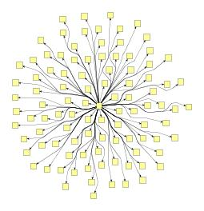
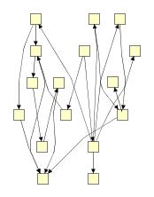

| Organic Edge Routing | ||
|---|---|---|
| Prev | Chapter 5. Automatic Graph Layout | Next |
OrganicEdgeRouter routes edges
organically to ensure that they do not overlap nodes and that they keep a
specifiable minimal distance to the nodes.
It is especially well suited for non-orthogonal, organic or cyclic layout
styles.
routes edges
organically to ensure that they do not overlap nodes and that they keep a
specifiable minimal distance to the nodes.
It is especially well suited for non-orthogonal, organic or cyclic layout
styles.
The algorithm is based on a force directed layout paradigm. Nodes act as repulsive forces on edges in order to guarantee a certain minimal distance between nodes and edges. Edges tend to contract themselves. Using simulated annealing, this finally leads to edge layouts that are calculated for each edge separately.
This algorithm will only work correctly if there is enough room between each pair of nodes in the graph. In particular, there should be a distance of at least twice the minimal distance (see below) between any two nodes.
In order to ensure that these preconditions are met, the technique described below can be used.
Figure 5.102. Sample edge routings produced with OrganicEdgeRouter
|

|

|
| Postprocessing edge routing of an organically laid out tree. | Automatic edge routing of a hand-laid-out graph structure. |
By default, OrganicEdgeRouter reroutes all edges of a given graph.
When only a subset of the edges should be routed, a data provider holding the selection
state for each edge is looked up.
The data provider is expected to be registered with the graph using the ROUTE_EDGE_DPKEY look-up key.
look-up key.
| Minimal Distance | |
| API | void setMinimalDistance(double minimalDistance) |
| Description |
This specifies the minimal allowed distance between nodes and edges. |
| Use Existing Bends | |
| API | void setUsingBends(boolean usingBends) |
| Description |
This option specifies whether existing bends should be used as an initial solution for the new routing. |
| Route Only Necessary | |
| API | void setRoutingAll(boolean routingAll) |
| Description |
If this option is enabled, all edges are routed. By default, this option is disabled and only edges that violate the minimal distance criterion are rerouted. |
| Allow Edge Overlaps | |
| API | void setEdgeNodeOverlapAllowed(boolean edgeNodeOverlapAllowed) |
| Description |
This option specifies whether edges are allowed to overlap with nodes. Enabling this option often improves the routing when nodes are not allowed to move (i.e., when using the node enlargement layout stage is not an option), and some distances between nodes do not comply with the algorithm's preconditions. Note that the minimal distance cannot always be maintained when using this option. |
In order to ensure that the preconditions of OrganicEdgeRouter are met for
arbitrary graphs, the routing process can be enhanced using specialized layout
stages.
In particular, the
createNodeEnlargementStage() method returns a layout stage that perfectly lends itself for usage in
conjunction with logic that creates more space between the nodes of a graph.
The code in Example 5.45, “Ensuring OrganicEdgeRouter's preconditions” presents this
technique.
method returns a layout stage that perfectly lends itself for usage in
conjunction with logic that creates more space between the nodes of a graph.
The code in Example 5.45, “Ensuring OrganicEdgeRouter's preconditions” presents this
technique.
Example 5.45. Ensuring OrganicEdgeRouter's preconditions
// 'graph' is of type y.layout.LayoutGraph. OrganicEdgeRouter oer = new OrganicEdgeRouter(); LayoutStage nodeEnlarger = oer.createNodeEnlargementStage(); CompositeLayoutStage cls = new CompositeLayoutStage(); cls.appendStage(nodeEnlarger); cls.appendStage(new BendConverter()); cls.appendStage(new RemoveOverlapsLayoutStage(0.0)); oer.setCoreLayouter(cls); oer.doLayout(graph);
Class OrganicEdgeRouter knows a number of data provider keys which are used to retrieve supplemental layout data for a graph's elements. The data is bound to the graph by means of a data provider which is registered using a given look-up key. Table 5.69, “Data provider look-up keys” lists all look-up keys that OrganicEdgeRouter tests during the layout process in order to query supplemental data.
Binding supplemental layout data to a graph is described in the section called “Providing Supplemental Layout Data”.
Table 5.69. Data provider look-up keys
| Key | Element Type | Value Type | Description |
|---|---|---|---|
| ROUTE_EDGE_DPKEY |
Edge | boolean | For each edge a boolean value indicating whether the edge shall be considered for rerouting or not. |
The following yFiles source code demo programs demonstrate how OrganicEdgeRouter can be used within an application.
|
Copyright ©2004-2015, yWorks GmbH. All rights reserved. |